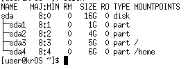

Разметка диска
Описание разметки при установке Arch Linux

Схема разметки
| Раздел | Точка монтирования | Файловая система | Размер |
|---|---|---|---|
| /dev/sda1 | /boot/efi | FAT32 | 512 МБ |
| /dev/sda2 | / | ext4 | 50 ГБ |
| /dev/sda3 | /home | ext4 | остальное |
| /dev/sda4 | swap | swap | 8 ГБ |
Описание схемы разметки
При установке Arch Linux используется ручная разметка диска, что является стандартным подходом для этого дистрибутива. В отличие от Ubuntu или Fedora, Arch Linux не имеет графического установщика с автоматической разметкой — всё выполняется вручную через утилиты fdisk, cfdisk или parted.
Выбрана схема разметки с таблицей разделов GPT (GUID Partition Table), что является современным стандартом, пришедшим на смену устаревшей MBR. GPT поддерживает диски объёмом более 2 ТБ и позволяет создавать до 128 разделов.
Обоснование выбора разделов
/dev/sda1 — EFI System Partition (512 МБ, FAT32)
Раздел EFI необходим для загрузки системы в режиме UEFI. Файловая система FAT32 является обязательным требованием спецификации UEFI. Размер 512 МБ достаточен для хранения загрузчиков нескольких операционных систем.
/dev/sda2 — корневой раздел / (50 ГБ, ext4)
Корневой раздел содержит саму операционную систему, установленные программы и системные файлы. Файловая система ext4 выбрана как наиболее стабильная и проверенная для Linux. Объём 50 ГБ обеспечивает достаточное пространство для базовой системы и установленного ПО.
/dev/sda3 — домашний раздел /home (остальное, ext4)
Выделение домашнего каталога на отдельный раздел позволяет переустанавливать систему без потери пользовательских данных. Сюда сохраняются документы, конфигурационные файлы, загрузки и прочие файлы пользователя.
/dev/sda4 — раздел подкачки swap (8 ГБ)
Swap-раздел используется системой как дополнительная виртуальная память при нехватке оперативной. Размер 8 ГБ соответствует рекомендациям для систем с аналогичным объёмом ОЗУ и позволяет использовать функцию гибернации (suspend-to-disk).
Команды разметки
Разметка диска при установке Arch Linux выполняется следующими командами:
fdisk /dev/sda # запуск утилиты разметки
g # создание новой GPT-таблицы
n → +512M # создание EFI-раздела
t → 1 (EFI System) # установка типа раздела
n → +50G # создание корневого раздела
n → +8G # создание swap-раздела
n → (остальное) # создание домашнего раздела
w # запись изменений
mkfs.fat -F32 /dev/sda1 # форматирование EFI
mkfs.ext4 /dev/sda2 # форматирование корня
mkfs.ext4 /dev/sda3 # форматирование /home
mkswap /dev/sda4 # создание swap
swapon /dev/sda4 # активация swap